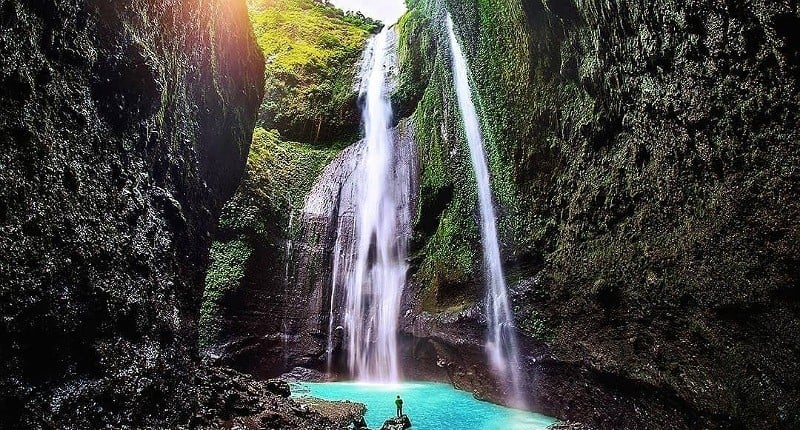

Sejarah
Air terjun Madakaripura adalah sebuah air terjun yang terletak di Kecamatan Lumbang, Kabupaten Probolinggo, Provinsi Jawa Timur. Air terjun setinggi 200 meter ini merupakan air terjun tertinggi di Pulau Jawa dan tertinggi kedua di Indonesia. Air terjun ini adalah salah satu air terjun di kawasan Taman Nasional Bromo Tengger Semeru tepatnya di lereng Gunung Bromo.
Air terjun Madakaripura berada di ujung lembah sempit dan berbentuk ceruk yang dikelilingi tebing-tebing curam yang meneteskan air pada seluruh bidang tebingnya seperti layaknya sedang hujan, 3 di antaranya bahkan mengucur deras membentuk air terjun lagi. Nama air terjun yang berada di ketinggian 1.000 Mdpl ini berasal dari kata Madakaripura, tanah perdikan milik mahapatih Gajah Mada dari kerajaan Majapahit. Air Terjun Madakaripura juga kerap disebut Air Terjun Abadi. Hal itu karena air yang dialirkan oleh air terjun ini selalu melimpah dan tak pernah berkurang debitnya.
Lokasi
Secara administratif Air terjun Madakaripura berlokasi di perbatasan tiga desa, yaitu Desa Negororejo Kecamatan Lumbang Kabupaten Probolinggo , di Utara. Desa Sapih, Kecamatan Lumbang Kabupaten probolinggo, di Selatan.dengan Desa Wonorejo, Kecamatan Lumbang Kabupaten Pasuruan, di Barat. tetapi mudah diakses dari Desa Negororejo, Kecamatan Lumbang Kabupaten Probolinggo.
Panorama

Perjalanan menuju ke air terjun sangat indah dan memanjakan mata dengan pemandangan pohon-pohon besar, udara yang segar dan juga melewati sungai-sungai. Sepatu yang kuat, tahan air ataupun sandal gunung sangat disarankan untuk perjalanan ini. Perjalanan menempuh kurang lebih 1 jam ketika kemudian suasana dingin cukup terasa. Maka dari itu, baju ganti, jas hujan ataupun payung sangat disarankan. Anda harus berjalan lebih jauh sedikit untuk bisa menikmati air terjun utamanya. Anda masih harus menaiki tebing yang cukup licin dan sempit. Tapi sekali lagi itu akan terbayar dengan begitu Anda melihat air terjun utama yang berdinding melingkar, jadi terlihat seperti Anda berada di dalam botol. Sangat indah.